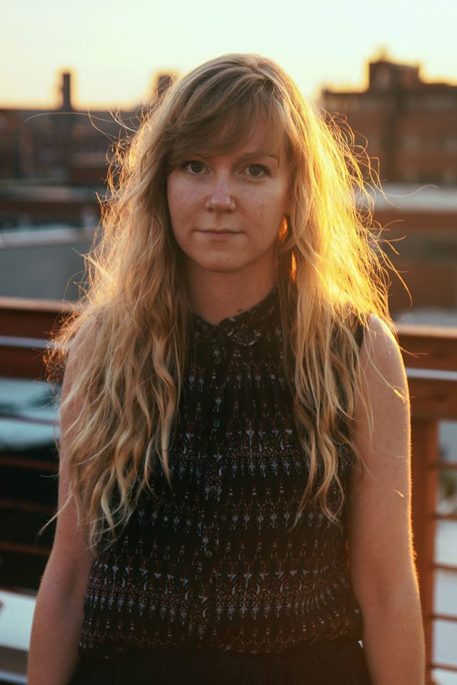

Prelude
Conversation
Katrine Øgaard Jensen
Writer, Editor, Translator
Writing, Process, Multi-tasking, Focus
From a conversation with Katy Henriksen
August 3, 2018
Writer, editor, and translator Katrine Øgaard Jensen discusses balancing a job with personal work, and why you need to always be protective of your time.
Katrine Øgaard Jensen is a translator and writer. She is one of the founding editors of EuropeNow, a journal of political research, literature, and art at Columbia University. She previously served as editor in chief of the Columbia Journal and blog editor at Asymptote and Words Without Borders. Her translation of Ursula Andkjær Olsen’s award-winning poetry collection Third-Millennium Heart was published by Action Books and Broken Dimanche Press in 2017.
My different roles inform my work in different ways. Definitely my background in journalism informs my own writing, but also my translation, because translation actually requires a lot of research. For Third Millennium Heart I ended up doing a lot more research than I thought I’d need to, because the book is such an onion. It has so many layers, and it’s all about things being inside and outside of one another. I ended up spending hours in these internet rabbit holes trying to figure out what it was that the poet I was translating was talking about. Journalism definitely has helped me a lot in terms of understanding a text and getting into the depths of whatever a writer intended with the text. In terms of my own writing, I love doing research and discovering little weird scientific facts or discovering new worlds.
When I first read Third Millennium Heart, I thought, “Oh, no big deal.” I thought it was an easier work to translate than it actually was when I really delved into the text. At first I just translated it in a pretty straightforward way, but then halfway through the book I realized that there’s a lot more to this text than what I first thought, because there are some phrases that are odd, and places with very subtle differences in the Danish language that made me look it up, and then I realized it was a reference to something. Then I had to go back and find all these places where the language sounded a little bit off, and realized it was because it was referencing Kierkegaard or Nietzsche or Hegel. There’re also tons of references to the bible and a lot of scientific body language.
As a translator, I’m supposed to make it sound similar to the original, not awkward, and barely noticeable that it’s a translation. But at the same time I have to hit exactly the right vocabulary in order for the reader to pick up on these references the same way that I did. So it was a matter of going into these works by these philosophers, or finding translations of the bible online to figure out what was the exact phrasing that she’s referring to, and how do I insert it in English in a way so that if people are curious about the text, they can Google this specific phrase and figure out, “Oh, that’s a reference to Nietzsche.” Or the bible or whatever it is.
In that way I like how it reads seamlessly. And at the same time, if the reader knows that there are these references, maybe they’ll be curious and will start looking up some of the lines and actually find out that it is an onion full of layers in terms of literature, but also in regards to society. I like how the whole book sort of starts within the body. Then it moves out into society, and then it moves out into the universe with planets, and planets as spiderwebs and all that stuff. It is just such a multi-faceted work. It is my hope that people read it and will barely notice the references, but then when they do they’ll get really excited like I did.
But I did have some challenges with her references to children’s songs, because some of these songs aren’t necessarily translated into English. For instance, there’s this one Danish children’s song that just sort of keeps going. Like you keep building on this song. The title of the song means “the mountain lies far out in the wood.” I had a really hard time finding an English equivalent to it. I ended up with “The Green Grass Grows All Around” because that actually has the same form. In some cases I had to swap out the references so that you would understand the idea behind the song more than the song itself. That’s, again, just one example of how I had to deal with research and translating that research into the English work.
I don’t know how other people do this, but for me I actually do research pretty much line by line. I don’t sit down and do all this research and then start working. It’s more like I start a poem, and then whenever I hit something that sounds like a reference, I’ll Google it. And then I’ll figure out what the reference is, and then I’ll start researching how to translate it into English.
I can tell you my favorite rabbit hole that I encountered. There’s this one poem I translated where it references a couple of songs. And in one of them, there’s a simple line that goes: “I dreamt a dream last night.” And I was just thinking oh, this is kind of weird that you have this fragment that just says, “I dreamt a dream last night.” I was thinking, why did she put it in there? And then I Googled it, and it turns out that it was actually a reference to the oldest known secular song in the Nordic country, which was written around 1300. It’s an old East Norse song that’s included in the Codex Runicus, which is a transcript of Scanian law. Just like this old Norse song written in runes. That’s an obvious rabbit hole to go down because I was obsessed with trying to figure out what it meant.
From when I got the book deal for translating Third Millennium Heart until it was done took me two years. But I also have, as you pointed out, a million other jobs. So, of course, it didn’t take me two whole years to translate this book. But with all the extensive research, it did take a long time.
It’s one of my favorite things, actually, because I feel like I never grow sick of one of those things because I keep switching between them. I have a pretty short attention span. I can only stay excited about one thing for a couple of hours and then I need to switch to something else. Translation is such an amazing writing exercise for me. It really helps me get excited about my own writing.
I translate a lot of stuff just for fun that I don’t necessarily plan to get published. Whenever I read a great poet, I just feel the urge to translate them into another language so I can practice getting that beautiful writing into my veins, or get it through my fingertips by rewriting it in another language. To me translation is very much a writing exercise that gets me into writing my own stuff. I did my MFA at Columbia University and there I had this great teacher, Alice Quinn. She’s the Director of Poetry Society America and worked at The New Yorker for a long time. She taught this class called something like “The Beauty and the Power of the Sentence,” where she told all of us that we should, as a writing exercise, take a book that we love and then type it out. Like, basically type the entire book into our computers. And then just sort of let the sentences flow through our fingertips.
To me, translation is taking that a step further. Not just typing in a text that I love, but actually rewriting it in another language. It’s like reinventing it. It makes you feel like you have decoded how it was done, in a way.
Editing is also a really important component of everything I do because, first of all, I spend a lot of time scouting for new writers from all over the world. When I worked at Asymptote, the journal for literary translation, I was so inspired by all the submissions we received. I was really excited about finding new voices all over the world that were translated into English, many of them for the first time. Discovering these voices also informed my own writing in many ways.
It’s my job to go and find these new voices. It’s incredibly inspiring to me, and a privilege, that I get to sit and look for writers from all kinds of countries and cultures for a living—writers who are major in their own countries, but who I’d never heard of because I don’t speak the language they write in.
Editing and solicitation plays a major part in my creative process, too. Just reading all these different poets and prose writers inspires me a lot. Then there’s of course the line-editing aspect of it, which is another component that I couldn’t live without because every time I pay really close attention to another writer and their sentences when I edit them, I also become very aware of my own writing in a different way. I try to edit myself as carefully as I edit others.
It’s very difficult, but it does help a lot. In editing others, I learn how to spot my own mistakes. When you see awkwardness in other people’s writing, you can sometimes also be like, “Oh, wait. That’s also what I did. I need to go back and fix that, because it’s actually really annoying.” It is all connected.
When I talk to people about what I do they sometimes say, “Yeah, but wouldn’t you really like to just be a full-time writer? Isn’t that the dream?” But it really isn’t, because I can’t see myself not doing all of these things at once. There’s some kind of network there that I don’t want to break, you know? I have my own little ecosystem of different things that I love to do. I think I would go insane if I did just one of those things.
Yes, always. It’s a constant struggle. And that’s, of course, also the danger of doing this many things. It is really difficult to delve in and stay with one thing for long enough to get to the next level. It’s a lot easier for me to just sit down and edit, or to translate, than it is for me to get into the writing zone. The writing zone is a constant struggle in my life. Getting to the point where I feel like I can really focus on my own writing is something I’m still trying to figure out how to do.
For now, I have three days a week where I edit for my day job, and then I have four consecutive days where I either sit down to translate, or I write my own stuff. I try to say, “Okay. This is my writing weekend.” Or, “This is my translation weekend.” And weekend means four days for me, which is a pleasure. That’s how I try to switch between those things. But I do need several days in a row where I can focus. It’s the same with emails. I read this great article by a writer who asked, “Would you rather be known for your actual writing or your swift email response?”
That was a really good article for me to read because for so long I’ve been obsessed with emailing people back right away. When I was out for a walk and an email ticked in on my iPhone I would immediately reply to them. I’d get some kind of gratification out of, you know, “Oh, I did a good job. I replied to this person immediately.” But it took me out of that meditative state that I was in. So now I try to really stick with only replying to emails on the days where I’m working.
On those three days where I’m in the office, I try to reply to all the emails then. I’ll still read them over the weekend, but I’ll try to decide if I really need to reply to them or not. So, I really try to just say that my weekends are holy. I need to be in a completely different world on those days. That’s how I try to balance the different things that I do.
Absolutely. And I’ll also say it’s the same with my personal life. Actually, I try to also plan out little blocks of personal engagement. I try to always plan my dinner dates with friends, or drinks or whatever, within the days I’m working in the office in Manhattan so that it won’t interfere with my writing or creative time. I think I do that pretty well, even though I do get a lot of flak from my friends for not going out on the weekends. It’s very helpful for me.
Exactly. I have a lot of friends who say they wake up in the morning and then do their writing early before they do anything else. I’m so jealous of that because I need full blocks of time. I need full days. I need to feel like I have an infinite amount of time ahead of me in order to do anything. And I’m happy to say that apparently David Lynch feels the same way. I just read his book on meditation and catching the big fish. It was really inspiring to me. The book was about his struggles with creativity and how to create things. He was talking about his youth as a painter, saying, “You know, in order to get one good hour in of painting, you have to have at least four hours.”